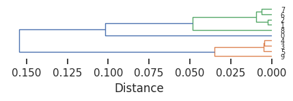
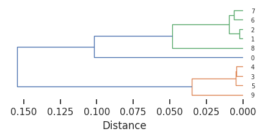
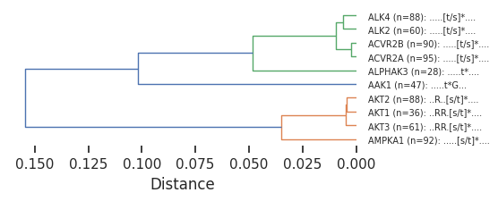
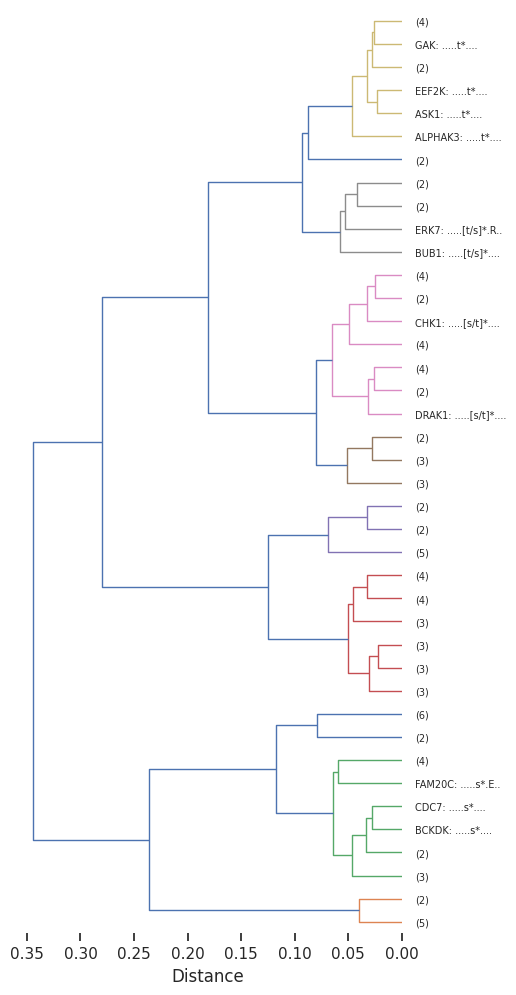

pssms=Data.get_pspa_scale()Hierarchical clustering
Overview
This module provides tools for computing pairwise distances between PSSMs (Position-Specific Scoring Matrices), performing hierarchical clustering, and visualizing results as dendrograms.
Distance Computation
get_1d_distance(df, func_flat) — Computes pairwise distances between all rows in a dataframe using a specified distance function. Returns a 1D condensed distance array suitable for scipy’s linkage functions.
dist = get_1d_distance(
df=pssms.head(10), # dataframe where each row is a flattened PSSM
func_flat=js_divergence_flat, # distance function taking two rows, returns scalar
)get_1d_js(df) — Convenience wrapper that computes pairwise JS (Jensen-Shannon) divergence distances.
dist = get_1d_js(
df=pssms.head(20), # dataframe of flattened PSSMs
)get_1d_distance_parallel(df, func_flat, max_workers, chunksize) — Parallelized version for large dataframes.
dist = get_1d_distance_parallel(
df=pssms, # dataframe of flattened PSSMs
func_flat=js_divergence_flat, # distance function
max_workers=4, # number of parallel workers
chunksize=100, # items per worker batch
)get_1d_js_parallel(df, **kwargs) — Parallelized JS divergence with same interface as above.
Linkage Matrix
get_Z(pssms, func_flat, parallel) — Computes the linkage matrix Z from a PSSM dataframe. This is the main entry point combining distance computation and hierarchical clustering.
Z = get_Z(
pssms=pssms.head(100), # dataframe of flattened PSSMs
func_flat=js_divergence_flat, # distance function (default: JS divergence)
parallel=True, # use parallel computation for speed
)Visualization
plot_dendrogram(Z, color_thr, dense, line_width, title, scale, **kwargs) — Plots a horizontal dendrogram from linkage matrix Z. Passes additional kwargs to scipy’s dendrogram().
plot_dendrogram(
Z=Z, # linkage matrix from get_Z()
color_thr=0.07, # distance threshold for coloring branches
dense=7, # density control (higher = more compact rows)
line_width=1, # width of dendrogram lines
title="My Cluster", # optional plot title
scale=1, # figure size multiplier
labels=labels, # custom leaf labels (from get_pssm_seq_labels)
truncate_mode='lastp', # scipy kwarg: show only last p merged clusters
p=40, # scipy kwarg: number of leaves to show
)PSSM Labeling
pssm_to_seq(pssm_df, thr, clean_center) — Converts a 2D PSSM back to a consensus sequence string. Uses brackets for multiple high-probability amino acids and * to mark the phosphorylation center.
seq = pssm_to_seq(
pssm_df=recover_pssm(pssms.iloc[0]), # 2D PSSM (rows=AAs, cols=positions)
thr=0.2, # probability threshold to include amino acid
clean_center=True, # keep only s/t/y at center position
)
# Returns e.g.: '..RR.[s/t]*....'get_pssm_seq_labels(pssms, count_map, thr) — Generates dendrogram labels combining the PSSM index name with its consensus sequence. Optionally includes sample counts.
labels = get_pssm_seq_labels(
pssms=pssms.head(10), # dataframe of flattened PSSMs
count_map=count_dict, # optional dict {index: count} for sample sizes
thr=0.3, # probability threshold for consensus sequence
)
# Returns e.g.: ['AKT1 (n=60): ..RR.[s/t]*....', ...]Full Pipeline Example
# 1. Load and subset data
pssms = Data.get_pspa_scale().head(100)
# 2. Compute linkage matrix
Z = get_Z(
pssms=pssms,
parallel=True,
)
# 3. Generate labels with consensus sequences
labels = get_pssm_seq_labels(
pssms=pssms,
thr=0.3,
)
# 4. Plot dendrogram
plot_dendrogram(
Z=Z,
dense=8,
labels=labels,
truncate_mode='lastp',
p=40,
)Setup
Distance
get_1d_distance
def get_1d_distance(
df, func_flat
):
Compute 1D distance for each row in a dataframe given a distance function
# return 1d distance
get_1d_distance(pssms.head(),js_divergence_flat)
0%| | 0/5 [00:00<?, ?it/s]
100%|██████████| 5/5 [00:00<00:00, 296.35it/s]array([0.08286125, 0.08577978, 0.08798376, 0.08501009, 0.00215832,
0.07937984, 0.07066437, 0.08348296, 0.07361695, 0.0042525 ])get_1d_js
def get_1d_js(
df
):
Compute 1D distance using JS divergence.
distance = get_1d_js(pssms.head(20))
0%| | 0/20 [00:00<?, ?it/s]
25%|██▌ | 5/20 [00:00<00:00, 45.19it/s]
65%|██████▌ | 13/20 [00:00<00:00, 62.03it/s]
100%|██████████| 20/20 [00:00<00:00, 78.69it/s]Parallel computing to accelerate when flattened pssms are too many in a df:
get_1d_distance_parallel
def get_1d_distance_parallel(
df, func_flat, max_workers:int=4, chunksize:int=100
):
Parallel compute 1D distance for each row in a dataframe given a distance function
get_1d_distance_parallel(pssms.head(),js_divergence_flat)get_1d_js_parallel
def get_1d_js_parallel(
df, func_flat:function=js_divergence_flat, max_workers:int=4, chunksize:int=100
):
Compute 1D distance matrix using JS divergence.
get_1d_js_parallel(pssms.head())get_Z
def get_Z(
pssms, func_flat:function=js_divergence_flat, parallel:bool=True
):
Get linkage matrix Z from pssms dataframe
Z = get_Z(pssms.head(10),parallel=False)
0%| | 0/10 [00:00<?, ?it/s]
100%|██████████| 10/10 [00:00<00:00, 165.83it/s]Z[:5]array([[1.00000000e+00, 2.00000000e+00, 2.15831816e-03, 2.00000000e+00],
[3.00000000e+00, 4.00000000e+00, 4.25249792e-03, 2.00000000e+00],
[5.00000000e+00, 1.10000000e+01, 4.65130779e-03, 3.00000000e+00],
[6.00000000e+00, 7.00000000e+00, 5.89059764e-03, 2.00000000e+00],
[1.00000000e+01, 1.30000000e+01, 9.31412253e-03, 4.00000000e+00]])plot_dendrogram
def plot_dendrogram(
Z, color_thr:float=0.07, dense:int=7, # the higher the more dense for each row
line_width:int=1, title:NoneType=None, scale:int=1, kwargs:VAR_KEYWORD
):
set_sns(100)plot_dendrogram(Z,dense=7,line_width=1)
plot_dendrogram(Z,dense=4)
pssm_to_seq
def pssm_to_seq(
pssm_df, thr:float=0.2, # threshold of probability to show in sequence
clean_center:bool=True, # if true, zero out non-last three values in position 0 (keep only s,t,y values at center)
):
Represent PSSM in string sequence of amino acids
pssm_df = recover_pssm(pssms.iloc[0])pssm_to_seq(pssm_df,thr=0.1)'I..QKt*G...'get_pssm_seq_labels
def get_pssm_seq_labels(
pssms, count_map:NoneType=None, # df index as key, counts as value
thr:float=0.3, # threshold of probability to show in sequence
):
Use index of pssms and the pssm to seq to represent pssm.
get_pssm_seq_labels(pssms.head(10))['AAK1: .....t*G...',
'ACVR2A: .....[t/s]*....',
'ACVR2B: .....[t/s]*....',
'AKT1: ..RR.[s/t]*....',
'AKT2: ..R..[s/t]*....',
'AKT3: ..RR.[s/t]*....',
'ALK2: .....[t/s]*....',
'ALK4: .....[t/s]*....',
'ALPHAK3: .....t*....',
'AMPKA1: .....[s/t]*....']import random# get a dict of index and counts
count_dict = {idx:random.randint(1,100) for idx in pssms.head(10).index}labels= get_pssm_seq_labels(pssms.head(10),count_dict)
labels['AAK1 (n=47): .....t*G...',
'ACVR2A (n=95): .....[t/s]*....',
'ACVR2B (n=90): .....[t/s]*....',
'AKT1 (n=36): ..RR.[s/t]*....',
'AKT2 (n=88): ..R..[s/t]*....',
'AKT3 (n=61): ..RR.[s/t]*....',
'ALK2 (n=60): .....[t/s]*....',
'ALK4 (n=88): .....[t/s]*....',
'ALPHAK3 (n=28): .....t*....',
'AMPKA1 (n=92): .....[s/t]*....']plot_dendrogram(Z,dense=4,labels=labels)
Full pipeline
# get distance matrix
pssms=pssms.head(100)
Z = get_Z(pssms)
# optional, get counts for each index
# count_dict = pssms.index.value_counts()
# get pssm to seq labels with counts
# labels= get_pssm_seq_labels(pssms,count_dict)
# or get pssm to seq labels only
labels= get_pssm_seq_labels(pssms)# plot dendrogram
plot_dendrogram(Z,dense=8,labels=labels,truncate_mode='lastp', p=40) # only show 40
# save
# save_pdf('dendrogram.pdf')